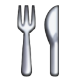
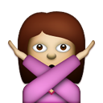

<div class="content">
  <section class="wanker-marketing-introduction">
    

    <p>Responsive design has been a blessing to web crafters everywhere. The web, however, was meant to be read, not squished. <strong><a href="https://github.com/migreyes/jquery.wanker">jquery.wanker.js</a></strong> is a tiny (<em>549 bytes minified</em>) jQuery plugin that reveals a public service announcement when people start <a href="http://cdn.elezea.com/gif/responsive.gif" target="_blank">excessively resizing</a> their desktop browser as they try to see your responsive breakpoints.</p>
    <p><strong><a href="https://github.com/migreyes/jquery.wanker">jquery.wanker.js</a></strong> is the perfect easter egg plugin for designers, photographers, writers, and anyone else <a href="https://github.com/migreyes/jquery.wanker/wiki/Design-Gallery" target="_blank">with a sense of humor</a> displaying their work on the web wishing their viewers to focus more on their work, and less on the magic of media queries.</p>
  </section>

  <section class="wanker-marketing-example">
    <h2>See it in action</h2>
    <p>Resize your browser for more than one second. Go on, we’ll wait. You can also <a href="/makes/wanker/example" target="_blank" title="View a live example of Wanker.">see another live example.</a>
  </section>

  <section class="wanker-marketing-usage">
    <h2>Setup, design, and usage</h2>

    <p>First, include jQuery and the plugin:</p>
{% highlight html %}
<head>
  <script src="/assets/javascript/jquery.min.js"></script>
  <script src="/assets/javascript/jquery.wanker.min.js"></script>
</head>
{% endhighlight %}

    <p>Write a public service announcement:</p>
{% highlight html %}
<div class="wanker" data-wanker>
  <div class="wanker-content">
    <h1>The web was meant to be read, not squished.</h1>
    <p>Prevent excessive browser resizing and get people back to reading.</p>
    <p>Download <a href="https://github.com/migreyes/jquery.wanker">jquery.wanker.js on GitHub</a>.</p>
  </div>
</div>
{% endhighlight %}

    <p>Design the message, and hide it by default:</p>
{% highlight css %}
.wanker {
  /* Full-screen takeover… */
  background: #000;
  color: #FFF;
  display: none;
  height: 100%;
  left: 0;
  position: fixed;
  top: 0;
  width: 100%;
  z-index: 2014;
}

.wanker-content {
  /* Additional design… */
}
{% endhighlight %}

    <p>Last, just call the wanker() function on your design.</p>
{% highlight javascript %}
$(function() {
  $('[data-wanker]').wanker();
});
{% endhighlight %}

    <p>Want the message to start sooner and last longer?</p>
{% highlight javascript %}
$(function() {
  // Customize the delay or duration defined in milliseconds
  $('[data-wanker]').wanker({delay: 0, duration: 5000});
});
{% endhighlight %}
  </section>

  <section class="wanker-marketing-download">
    
    <h2>Get it now</h2>
    <p><a href="https://github.com/migreyes/jquery.wanker" target="_blank">Fork me on GitHub</a>, or get the <a href="https://github.com/migreyes/jquery.wanker/raw/master/jquery.wanker.min.js" target="_blank">minified version now.</a></p>
  </section>

  <section class="wanker-marketing-share">
    

    <h2>Spread the good word</h2>
    <a href="http://twitter.com/share?text=Perhaps%20the%20single-most%20important%20jQuery%20plugin%20for%20web%20design:%20wanker.js%20by%20@migreyes">Tweet about jquery.wanker.js on Twitter.</a>
  </section>

  <section class="wanker-marketing-colophon">
    

    <h2>Colophon</h2>
    <p><strong>jquery.wanker.js</strong> was writen in CoffeeScript by <a href="http://twitter.com/migreyes">Mig Reyes</a>, a graphic designer at <a href="http://basecamp.com" target="_blank">Basecamp</a> who cares a lot about <a href="http://37signals.com/svn/posts/3404-reminder-design-is-still-about-words" target="_blank">words on the web</a>.</p>
  </section>

  <div class="wanker-marketing-text spacing-one">
    <span class="wanker-marketing-text-reflection">&nbsp;</span>
    
    
    
    
  </div>

  <div class="footer-chicago">
    <a href="/loves/chicago" class="chicago-flag" title="My favorite places in Chicago">
      <p>Made in Chicago</p><br>
      <span class="flag">✶✶✶✶</span>
    </a>
  </div>
</div>
{% include wanker.html %}